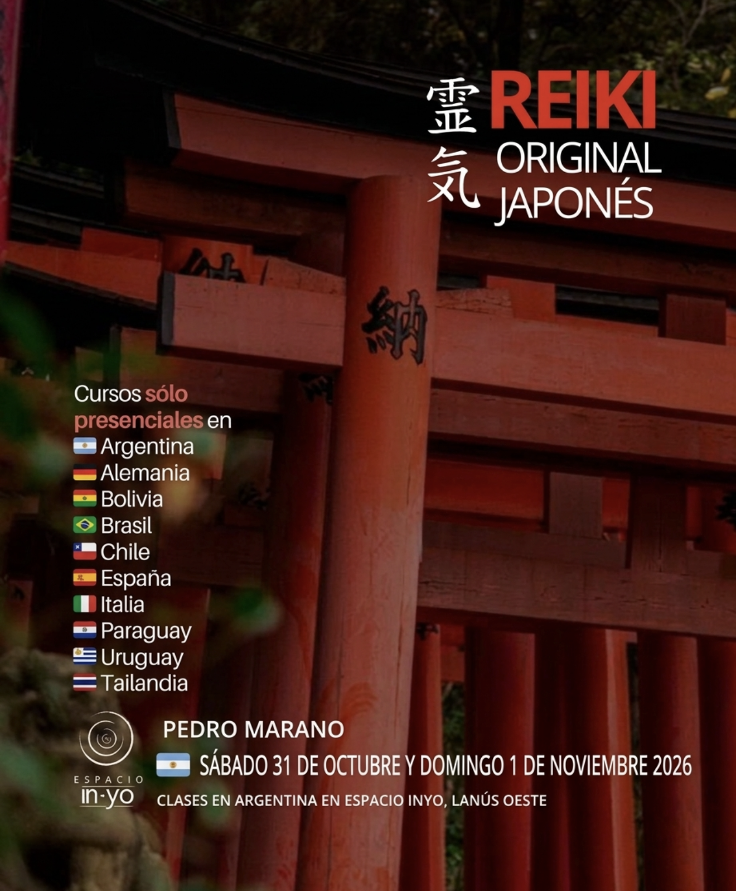

Linaje Gendai Reiki Ho
Seminarios presenciales de sanación dictados por Pedro Marano. Formación auténtica en Lanús.
Sábado 18 y Domingo 19 de Julio, 2026
¿Cómo se dividen los niveles?
Sábado 18 de Julio | 10:00 a 14:00 hs.
Te convertirás en una canal de Reiki puro. Aprenderás a purificar tu sistema nervioso y mente. Incluye técnicas de meditación y autotratamiento.
$118.000.-
Reservar Nivel 1Gendai Reiki Ho transmite las técnicas que nunca salieron de Japón. Pedro Marano recibió estas técnicas directamente en Kioto.
Reiki regula la presión, calma el sistema nervioso y suaviza picos emocionales. No es misticismo, es equilibrio energético real.
Si contás con formación previa en alguna disciplina de Reiki Occidental, no dudes en acercarte para completar tus conocimientos a través de un linaje directo.
Preparación inicial:
Sobre la cursada:
Todo lo aprendido está en los manuales oficiales de Hiroshi Doi.